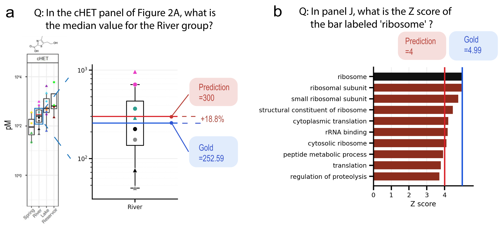

01
Mapping
Bind each figure to candidate supplementary tables using direct evidence (explicit references in text) or indirect evidence (figure descriptions matching table contents).
Grounding Plot Digitization in Real Scientific Figures and Their Source Data
How accurately can multimodal models read numbers off real scientific figures? We pair 1,119 questions from 1,066 bioRxiv preprints with author-released source data and evaluate 16 frontier models.
Each model sees the full figure and a question targeting one plotted value, and answers from the figure alone. Accuracy is the share of predictions within a relative-error tolerance of the source-grounded reference value.
16 models from 9 developers, default settings via OpenRouter. Click a column header to sort.
| Rank | Model | Developer | Acc. ±5% | Δ ±5→±2 | Cost / Q (¢) | Output tokens |
|---|
Cost and output tokens are averaged over all questions; output tokens include reasoning tokens where the provider reports them.
Higher cost does not buy higher accuracy. Dashed line connects Pareto-optimal models.
Bar, volcano, and scatter plots make up 77.3% of PlotGround-1k. For every model, the hardest of the five common types is scatter or volcano — finding one labeled point among many is the bottleneck.
Questions per chart type (n = 1,119)
Five most common chart types
Models receive the complete multi-panel figure. Each question names its target only with identifiers visible in the figure; the answer is recomputed from the deposited source table.
Instead of rendering synthetic charts from data, PlotGround starts from real figures and works backward to the source data that produced them. All stages run as Claude Code agents over a filesystem view of each paper.

Bind each figure to candidate supplementary tables using direct evidence (explicit references in text) or indirect evidence (figure descriptions matching table contents).
Keep only panels whose values can be recovered with simple operations — selection, aggregation, ratios, log transforms — and record a reconstruction recipe anchored to literal evidence.
Execute the recipe, sanity-check the recomputed values, and write at most two questions per figure using only figure-visible labels.
From 37,635 preprints to 1,119 verified questions
Because every question is linked to its source table, we can hold the question fixed and change only the evidence. Claude Code (Claude Sonnet 5) answers 500 rewritten questions with the full text plus figures, source tables, or both.
Where models fail, and what source-grounded data reveals about the figures themselves.
Models recognize log scales but misplace values between labeled ticks. Predicting 300 for a gold value of 252.59 looks close on the plot, yet is a 19% error.
For a bar of 4.99 extending past the last tick at 4, eight of sixteen models answered exactly 4. Only three read the overshoot and answered 5.
Human verification surfaced 8 figures whose plotted values disagree with their own deposited source data — a use case for accurate digitization.


If you find PlotGround useful in your research, please cite our work.
@misc{zhang2026plotground,
title = {PlotGround: Grounding Plot Digitization in Real Scientific Figures and Their Source Data},
author = {Yaohui Zhang and Binxu Li and Haoyi Duan and Jiacheng Miao and Yixin Wang and Xinran Du and Chenyue Li and Shilong Liu and Kevin Wu and James Zou},
year = {2026},
eprint = {2610.06825},
archivePrefix = {arXiv},
url = {https://arxiv.org/abs/2610.06825}
}